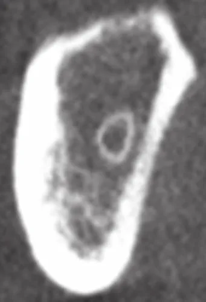
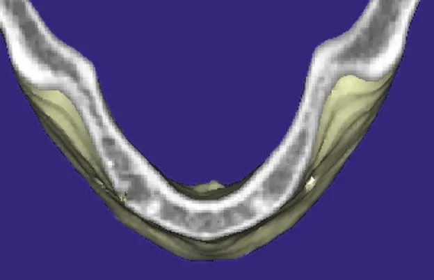

نسخه استخراجشده؛ ترجمه یا تأیید علمی انجام نشده است. وضعیت: captured
دیده شدن کانال مندیبل در تصویر، به ضخامت کورتکس اطراف آن بستگی دارد. وقتی جدارهی کورتیکالی ضخیمی دارد، بهراحتی دیده میشود؛ اما در بسیاری از موارد چنین جدارهای وجود ندارد و مسیر کانال باید با ردیابی در برشهای پیاپی دنبال شود.
مسیر عصب آلوئولار تحتانی سه الگو دارد. در نوع ۱، عصب به آپکس ریشهها بسیار نزدیک است و ارتفاع استخوان قابل استفاده را کم میکند — و آسیب عصبی در همین نوع شایعتر است. در نوع ۳، مطلوبترین وضعیت را داریم: بیشترین ارتفاع استخوان برای کاشت در مندیبل خلفی.
به همین دلیل، بررسی رادیوگرافیک جامع در صفحهی عمودی انجام شود، بهویژه در اعصاب نوع ۱ و ۲.

لوپ قدامی یعنی عصب پیش از خروج از فورامن منتال، قوسی به سمت قدام میزند و سپس به عقب برمیگردد. شناساییاش برای پیشگیری از آسیب حسی ضروری است — و اینجا خبر بد: تعیین لوپ قدامی با رادیوگرافی دوبعدی بهطور دقیق ممکن نیست. پانورامیک در این زمینه هم مثبت کاذب و هم منفی کاذب فراوان دارد و برای این کار عملاً نادقیق است.
راه بالینی دیگری هم هست — پروب کردن داخل فورامن منتال به سمت خلف — ولی نیازمند باز کردن کامل فلپ روی فورامن است؛ یعنی اطلاعاتی که خیلی دیر به دست میآید. مسیر درست، ارزیابی برشهای اگزیال از بالا به پایین است.
و خطر دوم: تقعر زیرزبانی در سطح لینگوال مندیبل. در مقطع، این فرورفتگی بهخوبی دیده میشود؛ در تصویر دوبعدی، اصلاً. نادیده گرفتنش یعنی پرفوراسیون لینگوال — و در نواحی قدامی، خطر خونریزی کف دهان.
